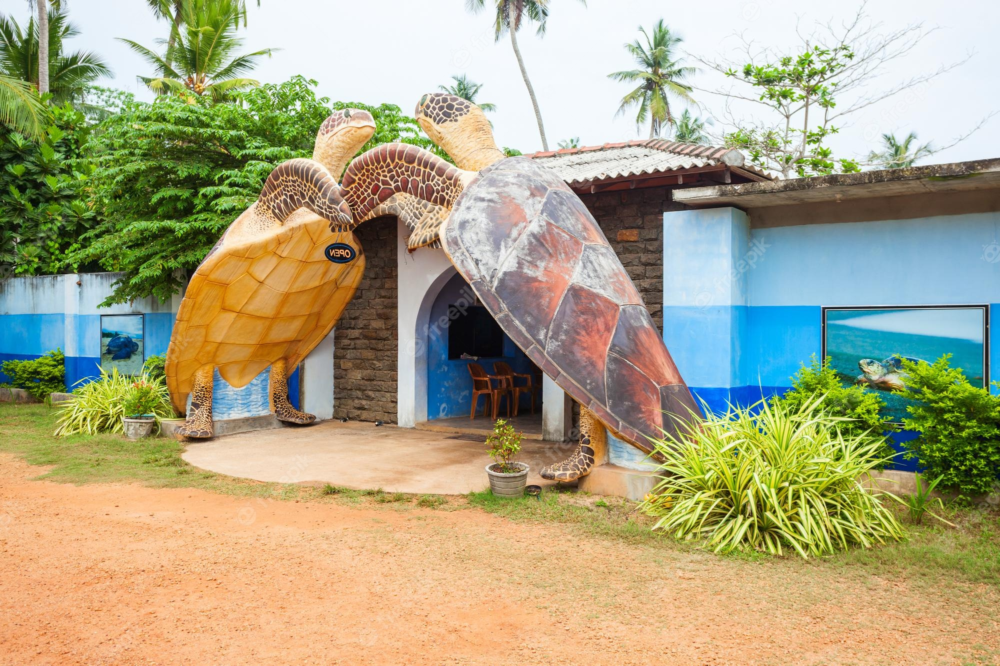
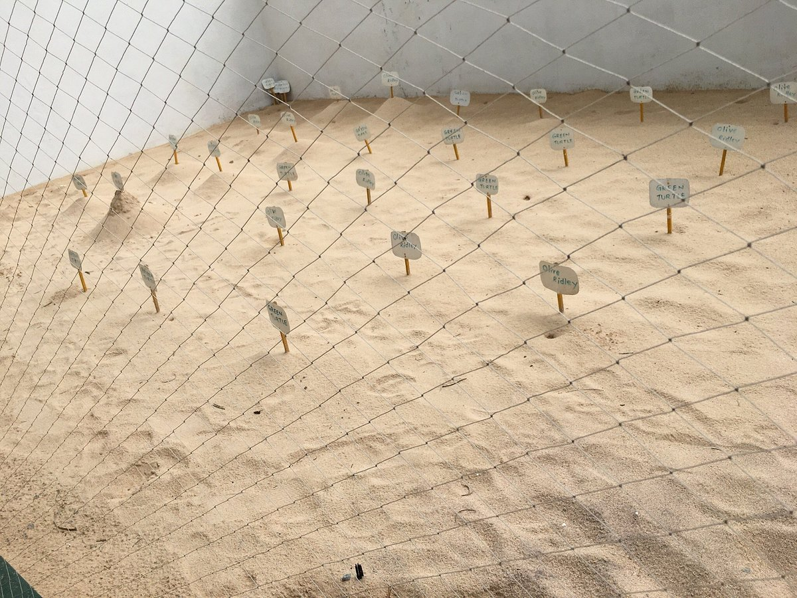
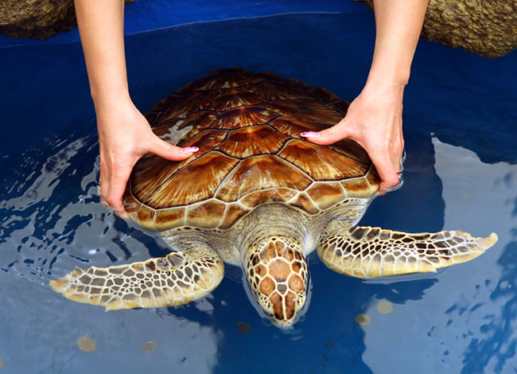

Kosgoda Turtle Hatchery
Join us on a memorable tour to catch a glimpse of these majestic yet adorable creatures.


From turtle eggs to fully grown turtles, our turtle hatchery is a safe haven for all turtle species found in beaches all around Sri Lanka. Turtle eggs are deposited in-house,
at an optimal temperature until they are hatched. Once the eggs are hatched, turtle hatchlings are moved to tanks where they are safe from predators. The little hatchlings will
be given medical attention and care by a well-trained staff until they are strong to endure the dangers of the ocean.

Visit our turtle hatchery to witness these magnificient yet adorable creatures with your own eyes and gain valueble knowledge with regards to their lifestyle at our hatchery.
Our experienced guides will walk you through each and every phase of rescuing and rehabilitating turtles as well as an insight into the various threats faced by the entire turtle population and of course,
how we as humans, can mitigate those threats. Visitors will also get the chance to feed the turtles as well as take pictures with them.